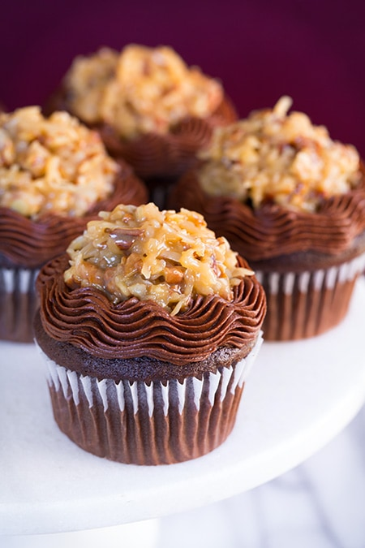

Cupcake
Decadent German Chocolate Cupcakes
Indulge your senses with our luscious German Chocolate Cupcakes, a symphony of flavors and textures that elevate
the classic cupcake experience. These moist and rich chocolate cupcakes are topped with a velvety coconut and
pecan frosting that adds a delightful sweetness and nutty crunch. Each bite is a journey through layers of
chocolatey bliss, creating a perfect balance between the moist cake and the heavenly frosting. Whether served at
special occasions or enjoyed as a delightful treat on any day, our German Chocolate Cupcakes are a true
celebration of flavor and indulgence

Ingredients
- 1 and 3/4 cups all-purpose flour
- 3/4 cup unsweetened cocoa powder
- 1 and 1/2 teaspoons baking powder
- 1 and 1/2 teaspoons baking soda
- 1 and 3/4 cups granulated sugar
- 1/2 cup unsalted butter, softened
- 2 large eggs
- 1 teaspoon vanilla extract
- 1 cup buttermilk
Steps
- Preheat your oven to 350°F (175°C). Line cupcake pans with paper liners for easy removal.
- In a medium bowl, whisk together the all-purpose flour, cocoa powder, baking powder, baking soda, and salt.
Set aside.
- In a large mixing bowl, cream together the softened butter and granulated sugar until light and fluffy.
- Beat in the eggs one at a time, ensuring each is fully incorporated. Add the vanilla extract and mix until
well combined.
- Gradually add the dry ingredient mixture to the wet ingredients, alternating with buttermilk. Begin and end
with the dry ingredients, mixing until just combined.
- Divide the batter evenly among the prepared cupcake liners, filling each about two-thirds full.
- Bake in the preheated oven for 18-20 minutes or until a toothpick inserted into the center of a cupcake
comes out clean. Remove from the oven and allow the cupcakes to cool in the pans for a few minutes before
transferring them to wire racks to cool completely.
- In a saucepan, whisk together evaporated milk, sugar, egg yolks, and butter over medium heat. Cook and stir
until the mixture thickens, about 10-12 minutes. Remove from heat and stir in vanilla extract, shredded
coconut, and chopped pecans. Allow the frosting to cool to room temperature.
- Once the cupcakes are completely cooled, generously frost each cupcake with the coconut and pecan frosting.
- For added flair, garnish each cupcake with a sprinkle of shredded coconut and chopped pecans.